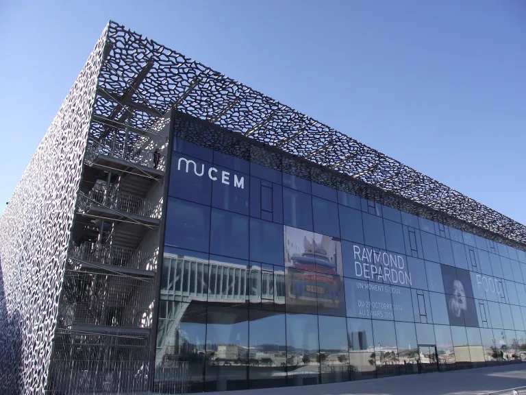
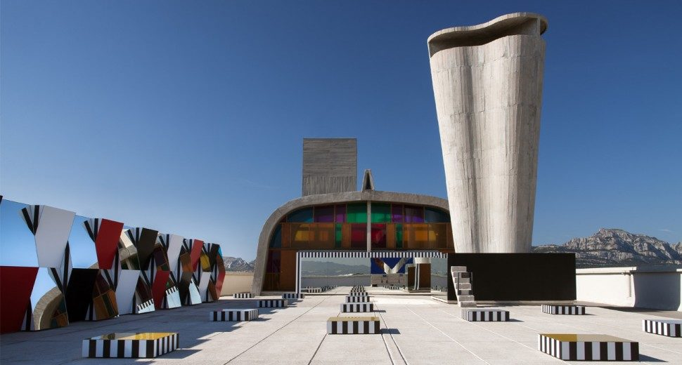
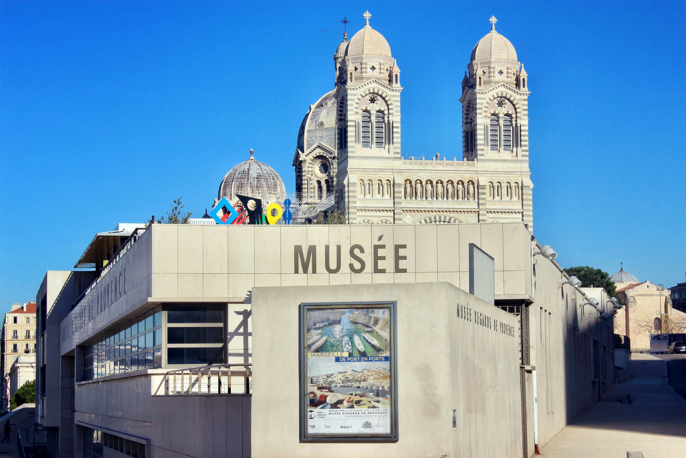
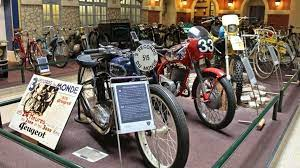

1- MuCEM (Musée des Civilisations de l'Europe et de la Méditerranée)
Ce site n'est pas seulement l'un des musées les plus importants de la ville de Marseille, c'est aussi l'un des bâtiments les plus représentatifs du vieux port de la ville. LeMuCEM ( Musée des Civilisations de l'Europe et de la Méditerranée) est une institution nationale de plus de 40 000 m² dédiée à la conservation et à l'étude anthropologique des sociétés qui se sont développées sur le continent. C'est certainement l'un des lieux les plus visités de toute la ville et cela est dû à sa facilité d'accès grâce à son iconique passerelle de 115 m de long qui le relie au Fort Saint Jean, une étape obligée lors d'une visite touristique du vieux port. Compléter la visite de ce lieu par une promenade en bateau dans Marseille est également une excellente idée, d'autant plus qu'il est situé dans la zone portuaire d'où partent généralement ces types de bateaux touristiques.
Détails intéressants
Situation : 1 Esp. J4, 13002 Marseille, France. Horaires d'ouverture : Le musée est ouvert tous les jours de la semaine sauf le mardi et les horaires d'ouverture varient selon la période de l'année. En haute saison, de juillet à septembre, il est généralement ouvert de 10h à 20h. Prix : Les billets coûtent environ 10 euros par personne.2-Musée d'histoire de Marseille
Pour les passionnés d'Histoire Situé à deux pas du Vieux-Port, ce musée au parcours attrayant permet de découvrir les vingt-six siècles d’histoire de la plus ancienne ville de France. Adossé au jardin des vestiges qui abrite les ruines archéologiques du Port antique, il recèle plus de 400 pièces, des objets du quotidien et des œuvres d’art. Des dispositifs multimédia ponctuent la visite. Sept épaves antiques - deux grecques et trois romaines, - sont exposées dans le musée. Elles constituent, avec l'épave romaine de la Bourse, la collection la plus importante de navires antiques actuellement présentée en Méditerranée.
3-Musée d'Art Contemporain (MAC)
Le Musée d'Art Contemporain (MAC) de Marseille, également connu sous le nom de [mac], est un lieu emblématique de l'art contemporain dans la ville. Voici un résumé concis des informations clés sur le Musée d'Art Contemporain à Marseille :
Collection :
Le musée abrite près de 800 œuvres d'art, offrant un aperçu complet de la production de la seconde moitié du XXe siècle et du début du XXIe siècle. La collection comprend des œuvres de divers mouvements artistiques tels que le Nouveau Réalisme, le Support Surface, l'Arte Povera, le Land Art et le mouvement Fluxus.Jardin :
Le jardin du musée présente des œuvres supplémentaires d'artistes tels qu'Alberola, Julien Blaine, César, Erik Dietman et Fabrice Guygi, complétant ainsi l'exposition intérieure.Rénovation :
Le musée a fait l'objet d'une remarquable campagne de rénovation, et sa réouverture a marqué la fin de quatre années de travaux. Le Musée d'Art Contemporain de Marseille offre une collection vibrante et diversifiée d'art contemporain, ce qui en fait une destination incontournable pour les amateurs d'art et les visiteurs souhaitant explorer la scène artistique moderne à Marseille.4-Château de Borély - Musée des Arts décoratifs, de la Faïence et de la Mode

The Château Borély, Musée des Arts décoratifs, de la Faïence et de la Mode, situé au 134, Avenue Clot-Bey, Marseille, est un musée dédié aux arts décoratifs, à la faïence et à la mode. Voici un aperçu de ce musée :
Historique :
Le château a été construit vers 1760-1770 par la famille Borély pour en faire sa résidence d'été. Il est devenu la propriété de la ville en 1856, puis a été transformé en muséeCollection :
Le musée présente une riche collection d'arts décoratifs, de céramiques et de mode, offrant aux visiteurs un aperçu de l'artisanat et du design à travers les époquesRéouverture :
Le musée a ouvert ses portes au public le 15 juin 2013, après des travaux de rénovation et de réaménagementExpositions :
Le musée propose des expositions mettant en valeur l'artisanat et la mode, offrant aux visiteurs une expérience culturelle immersive Le Château Borély, Musée des Arts décoratifs, de la Faïence et de la Mode est un lieu emblématique qui offre aux visiteurs l'opportunité de découvrir l'art, l'artisanat et la mode à travers les siècles.5-La Vieille Charité et ses musées

La Vieille Charité, située dans le quartier du Panier à Marseille, est un lieu historique du XVIIe siècle qui abrite plusieurs musées et structures multi-culturelles. Voici un aperçu des musées et des
activités culturelles qui y sont proposés :
Musée d'Archéologie Méditerranéenne : Ce musée met en valeur l'archéologie de la région méditerranéenne et propose des expositions riches en histoire et en artefacts .Musée des Arts Africains, Océaniens, Amérindiens : Ce musée présente des collections d'arts provenant de ces différentes cultures, offrant aux visiteurs une immersion dans la diversité artistique de ces régions
Expositions et Activités Culturelles : La Vieille Charité propose régulièrement des expositions temporaires mettant en avant des œuvres d'art variées, des démonstrations, des ateliers, des conférences et des visites guidées gratuites, offrant ainsi une expérience culturelle riche et diversifiée La Vieille Charité est donc un lieu incontournable pour les amateurs d'histoire, d'art et de culture, offrant une plongée fascinante dans l'archéologie méditerranéenne ainsi que dans les arts africains, océaniens et amérindiens.
6-MAMO (Centre d'art de la Cité Radieuse)
Le MAMO (Centre d'art de la Cité Radieuse) est un centre d'art contemporain situé sur le toit-terrasse de la Cité Radieuse, une œuvre emblématique de l'architecte Le Corbusier à Marseille. Voici un aperçu des informations pertinentes sur le MAMO :
Localisation :
Le MAMO est situé sur le toit-terrasse de la Cité Radieuse, une réalisation architecturale majeure de Le Corbusier à MarseilleFondation :
Le MAMO a été fondé par Ora Ito, et il est dédié à la présentation d'œuvres d'art contemporain, offrant ainsi une expérience artistique uniqueRestauration :
Le MAMO a été restauré et réaménagé pour accueillir des expositions artistiques, offrant aux visiteurs une vue exceptionnelle sur la ville de Marseille Le MAMO offre donc une expérience artistique immersive au cœur d'un site architectural emblématique, offrant une combinaison unique d'art contemporain et d'architecture visionnaire.7-Musée des Beaux-Arts de Marseille

Le Musée des Beaux-Arts de Marseille, situé dans l'aile gauche du Palais Longchamp, est l'un des
principaux musées de la ville. Voici un résumé des informations clés sur ce musée :
Localisation : Palais Longchamp, 13233 Marseille Cedex 20, France.
Historique : Créé en 1801, le musée est l'un des quinze premiers musées créés en France par le
Consulat.
Il est installé dans l'aile gauche du Palais Longchamp depuis 1869
Collection :
Le musée abrite une collection de peintures, sculptures et dessins du XVIe au XIXe siècle, comprenant des œuvres des écoles française, italienne, espagnole, flamande et hollandaise. Il possède également une importante collection de sculptures de Pierre Paul Puget, ainsi que "La Méditation" d'Auguste RodinExpositions :
Le musée propose des expositions temporaires et offre un accès gratuit à ses collections permanentes Le Musée des Beaux-Arts de Marseille est un lieu incontournable pour les amateurs d'art, offrant une riche collection d'œuvres allant du XVIe au XIXe siècle, ainsi que des expositions temporaires variées.8-Regards de Provence

Le Centre de la Vieille Charité, situé dans le quartier du Panier à Marseille, est un lieu
historique du
XVIIe siècle qui abrite plusieurs musées et structures multi-culturelles. Voici un aperçu des musées
et
des activités culturelles qui y sont proposés :
Musée d'Archéologie Méditerranéenne : Ce musée met en valeur l'archéologie de la région
méditerranéenne et propose des expositions riches en histoire et en artefacts
Musée des Arts Africains, Océaniens, Amérindiens : Ce musée présente des collections d'arts
provenant de ces différentes cultures, offrant aux visiteurs une immersion dans la diversité artistique de ces
régions
Expositions et Activités Culturelles : La Vieille Charité propose régulièrement des expositions
temporaires mettant en avant des œuvres d'art variées, des démonstrations, des ateliers, des
conférences
et des visites guidées gratuites, offrant ainsi une expérience culturelle riche et diversifiée
La Vieille Charité est donc un lieu incontournable pour les amateurs d'histoire, d'art et de
culture,
offrant une plongée fascinante dans l'archéologie méditerranéenne ainsi que dans les arts africains,
océaniens et amérindiens.
9-Musée du Savon de Marseille

Le Musée du Savon de Marseille, également connu sous le nom de La Licorne, est un musée dédié à
l'industrie emblématique du savon de Marseille. Voici un aperçu des informations pertinentes sur ce
musée :
Localisation :
Le musée est situé à Marseille et a ouvert ses portes en 2018 pour célébrer l'industrie emblématique du Savon de MarseilleCollection :
Le musée propose une visite autoguidée, offrant des images, des modèles d'équipements de fabrication de savon et des présentations intéressantes, permettant aux visiteurs de découvrir l'histoire et le processus de fabrication du savon de MarseilleLe Musée du Savon de Marseille La Licorne offre une plongée fascinante dans l'histoire et la fabrication du savon de Marseille, une industrie emblématique de la région.
10-Musée de la Moto

Le Musée de la Moto à Marseille est un lieu dédié à l'histoire et à l'évolution des motos. Voici un
aperçu des informations pertinentes sur ce musée :
Localisation :
18 Traverse, Trav. Saint-Paul, 13013 Marseille, FranceHoraires :
Actuellement fermé. Habituellement ouvert du mardi au samedi de 9h à 17hCollection :
Le musée offre une plongée fascinante dans l'histoire des motos, avec des expositions mettant en valeur l'évolution des deux-roues à travers les époquesLe Musée de la Moto à Marseille est un lieu incontournable pour les passionnés de motos et les amateurs d'histoire, offrant une immersion captivante dans le monde des deux-roues.